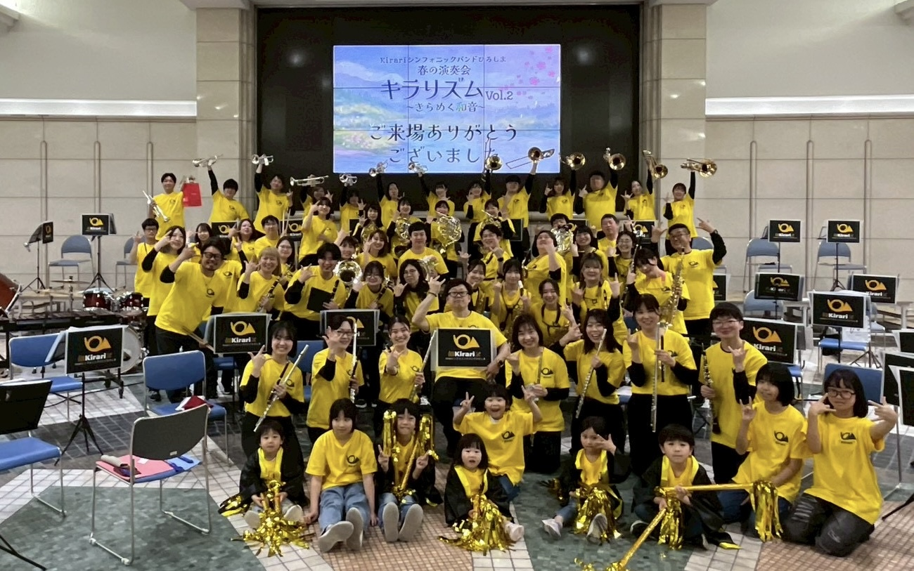
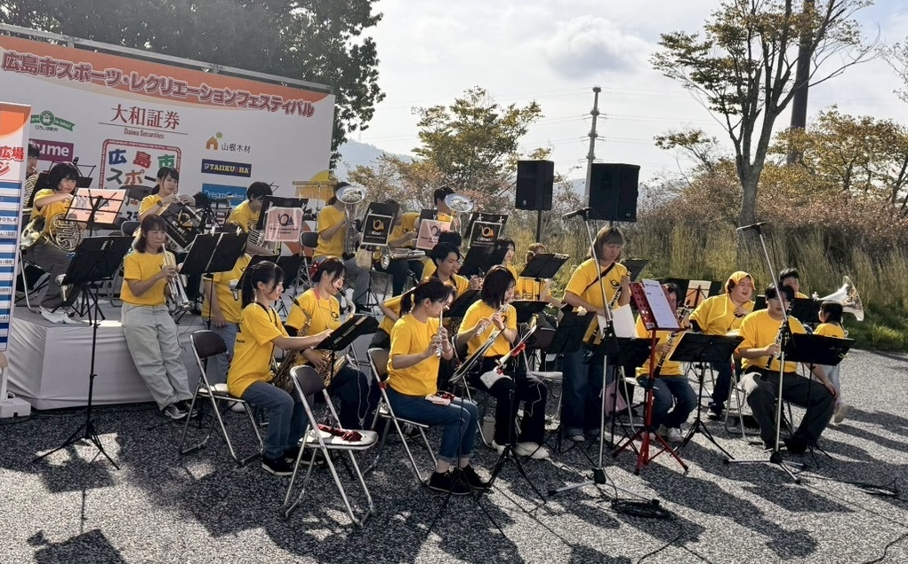
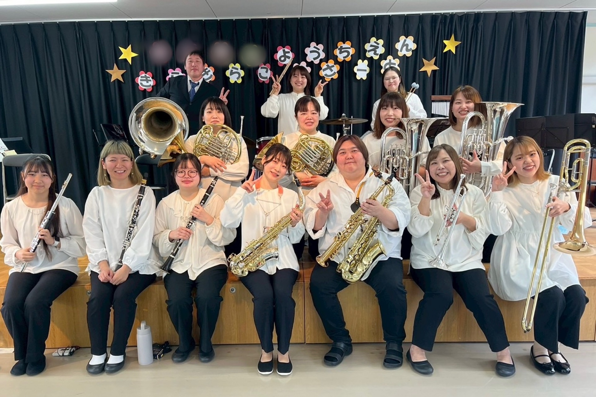

01
定期演奏会
日頃の練習の成果を披露する定期演奏会を開催しています。
ABOUT
Kirariシンフォニックバンドひろしまは、広島市で活動する吹奏楽団です。
定期演奏会をはじめ、地域のイベントへの出演など、幅広い活動を行っています。
お子さま連れでも気軽に練習に参加していただけます！
CONDUCTOR
宮崎県出身。
エリザベト音楽大学を卒業。在学中にチューバからトロンボーンへ転科する。
大学卒業後は、フリーランスのトロンボーン奏者として活動。その後、吹奏楽指導者の道へ進み、指導校を各支部大会・全国大会へ導く。
現在は、広島市立安佐中学校、広島文教大学付属高等学校にて非常勤講師・部活動指導員を務める。
Kirariシンフォニックバンドひろしま 常任指揮者
CONCERT
ACTIVITY

01
日頃の練習の成果を披露する定期演奏会を開催しています。

02
地域のお祭りやイベントなどにも積極的に出演しています。

03
地域の施設や保育園などを訪問し、 園児や利用者の皆さまに向けたミニコンサートを実施しています。
MEMBER
Kirariシンフォニックバンドひろしまでは、 一緒に演奏してくださる団員を募集しています。
Kirariシンフォニックバンドひろしまの
活動の様子をInstagramで発信しています。